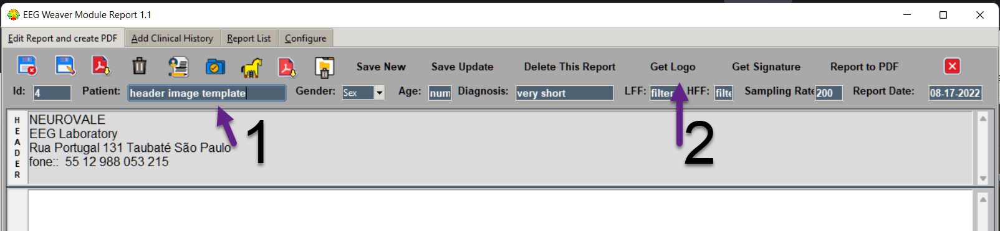
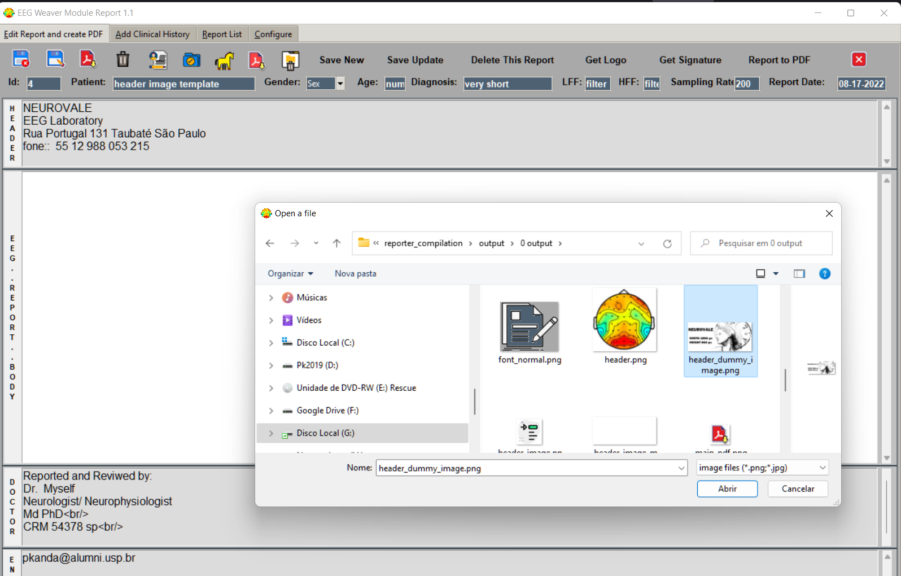
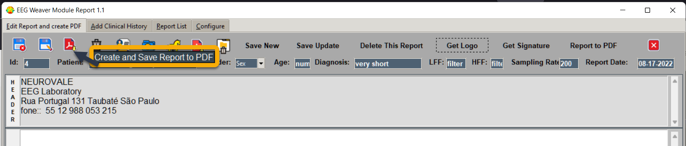
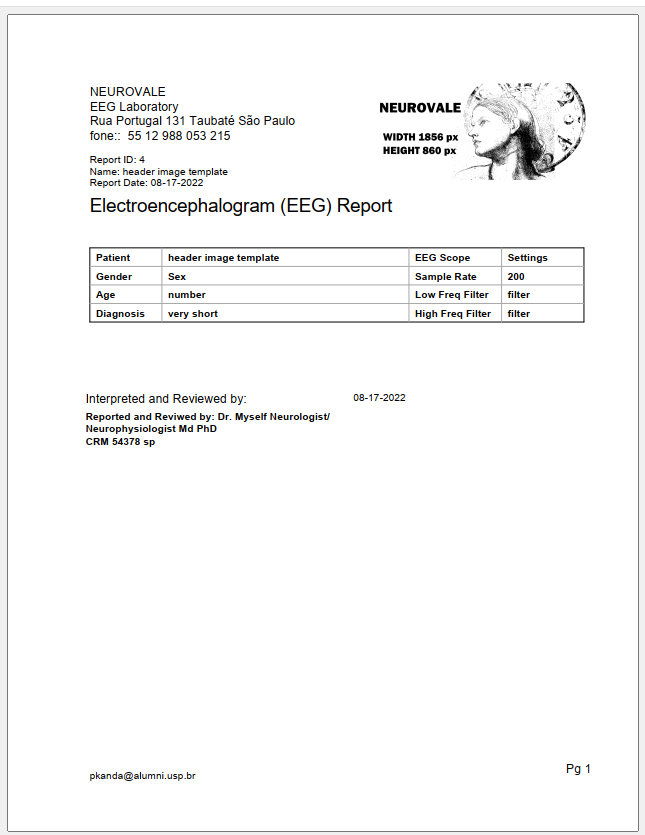

Improve report formatting - Insert a Header Image
Inserting a header image.
on Tab3, select a report, in our example “second template” which doesnot have a header image.

Go to Tab1, change “Patient” name to, for example, “header image template” and “Get Logo”.
Now in Tab3 you have two templates “second template” and “Header image template”.
“Get Logo” in Tab1 allows you to select an image from any folder. An windows opens for image selection.
The size of the image in pixes is shown bellow.

You can use your own image with the same size.
Select image, close window, come back to Tab1, click on “Save changes before closing”.
Click on “Create and Save Report to PDF” to save pdf and see the result.
Now this report has a header image.
The result pdf is:
To remove image from header you can change to a blank image (there is one in install folder –> blank_header.png) or use the previous template, in our case “second template” (without image), or you can go to Tab 3 and “Delete Logo”.